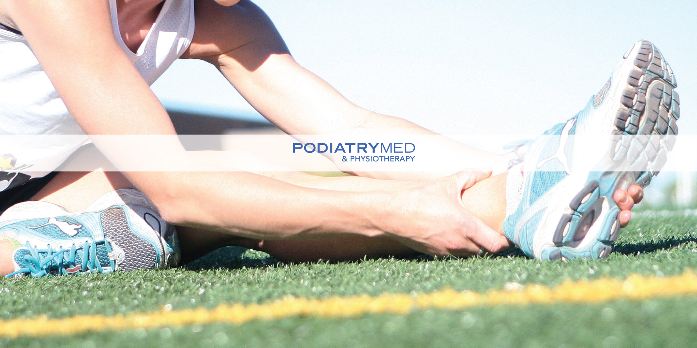
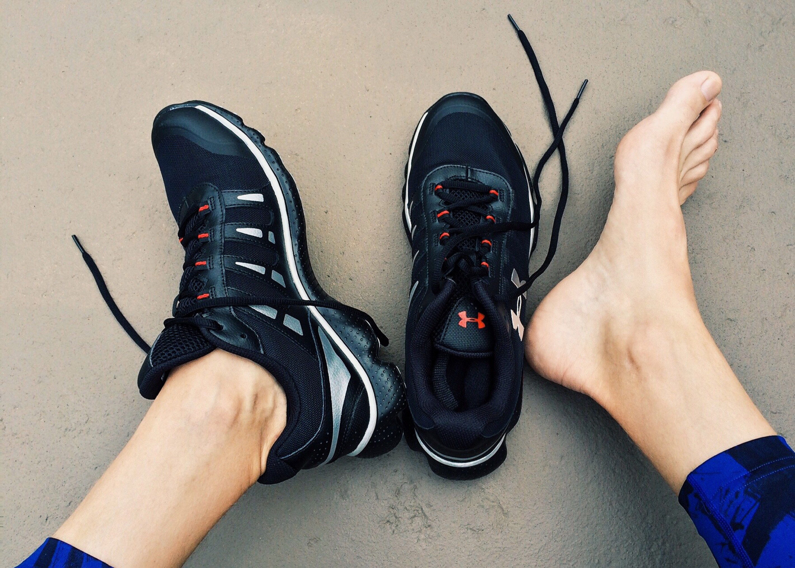
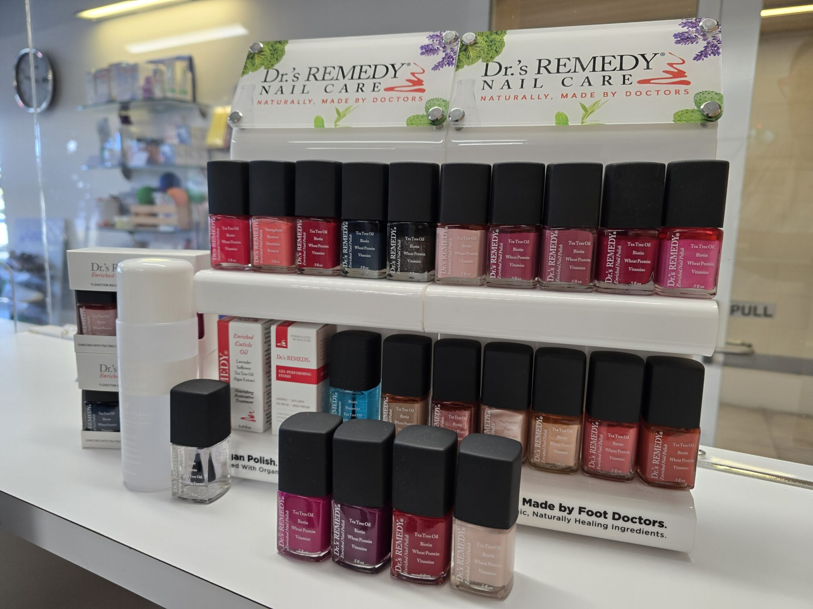
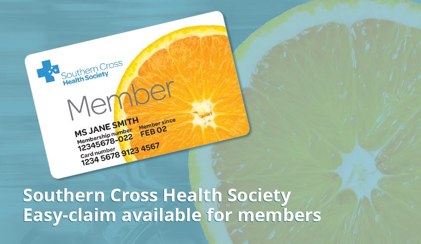

Podiatry & Physiotherapy
We utilise both in-house and outsourced referral processes to ensure the best standard of care for you.
See our services
Led by Bruce Baxter, the PodiatryMed team works with modern practices and has a combined experience of over 50 years. We help with everything from foot and heel pain to running analysis, children’s feet and nail care.
Podiatry and physiotherapy for feet, legs and sports injuries, for adults and children.
Also: Bio-mechanical analyses · Footwear prescription for running shoes and women’s fashion shoes
The PodiatryMed team, led by Bruce Baxter, works with modern practices backed by the latest research and has a combined experience of over 50 years.
Our Head Office & Clinic is conveniently located in central Christchurch.

We utilise both in-house and outsourced referral processes to ensure the best standard of care for you.
See our servicesPlease familiarise yourself with our Appointment Checklist.
It has all you need to know about what to bring, where to park and what to expect.
Request the Appointment ChecklistMany common foot and leg issues we see in adults could have been avoided if they had been treated from a younger age.
More about children’s feetMany adult foot and leg issues could have been avoided with treatment from a younger age.
Do you have pain and redness on the skin at the corner of your toe? Don’t wait until we are closed during the Christmas break. Get in soon.
An ingrown toenail is a painful condition. We can eliminate that pain with our Nail and Skin appointment, or if needed proceed with ingrown toe nail surgery.
Our podiatrist Kate Spence is highly experienced and specialised in toenail surgery. No doctor’s referral is required.
‘Get your Happy Toes now!’
Call 0508 508 508
Are your toes and feet Summer ready? These also make great gifts.
Ask about Dr.’s Remedy
We are an Easy-claim provider! No more forms to fill out. We can claim the consultation charge on your behalf.
Book: 0508 508 508Our Head Office & Clinic is conveniently located in central Christchurch.
AEQ BuildingOn-street parking available.